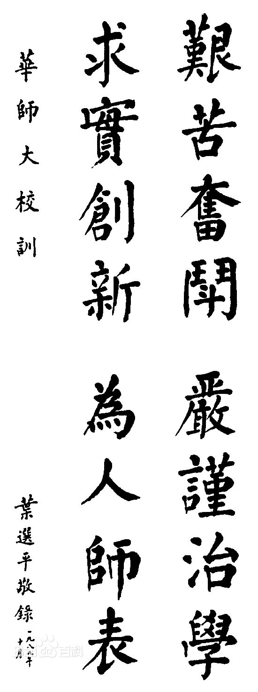

"这里有一份华师名片，请查收！"

华南师范大学始建于1933年，前身是广东省立勷勤大学师范学院。1996年进入国家“211 工程”重点建设大学行列， 2015年成为广东省人民政府和教育部共建高校，同年进入广东省高水平大学整体建设高校行列，2017年学校进入 国家“世界一流学科”建设行列。学校现有广州石牌、广州大学城和佛山南海3个校区，占地面积3025亩，校舍面积 151万平方米，图书392万册。
学校现有教育技术学、发展与教育心理学、光学、体育人文社会学（重点培育）4个国家重点学科，9个国家 “211 工程” 重点建设学科，22个广东省重点学科（含5个攀峰重点学科，14个优势重点学科和3个特色重点学科，共18个一级重点学 科和4个二级重点学科）。在教育部第三轮学科评估中，心理学、体育学和教育学3个学科进入全国高校前10%；化学、植 物与动物学、工程学和数学4个学科进入 ESI 全球前 1%。学校拥有84个本科专业，32个硕士学位授权一级学科、200多 个硕士学位授权点、14个硕士专业学位授权点，15个博士学位授权一级学科、100多个博士学位授权点、1个博士专业学位 授权点，17个博士后流动站。学科布局覆盖哲学、经济学、法学、教育学、文学、历史学、理学、工学、农学、医学、管 理学、艺术学 12个门类。
学校教师队伍结构良好、水平较高，拥有一批在国内外具有一定影响的专家学者。现有专任教师1934人，其中副高级以上 1098人，博士、硕士研究生导师1132人，具有博士、硕士学位的1810人。现有院士（含双聘和外籍）11人，“长江学者”7人， 国家杰出青年基金获得者6名，“长江学者与创新团队发展计划”创新团队3个，国家教学名师2人，百千万人才工程国家级人 选6人，教育部新世纪优秀人才支持计划人选20人，“万人计划”入选者2人，中宣部“四个一批”人才3人，国家优秀青年基金 获得者1人，广东省领军人才8人，广东省创新科研团队2个，珠江学者15人，广东省高等学校“千百十工程”国家级培养对象 7名，并有国务院学位委员会学科评议组成员3名，教育部高等学校教学指导委员会成员 13名。
学校自建国之初就开始面向全国招生，现招生范围覆盖全国34个省、自治区、直辖市、特别行政区。学校现有在校全日制 本科生24998人，硕士研究生7312人，博士研究生821人，博士后在站98人，每年在校留学生达1000多人，形成了学士 ——硕士——博士——博士后完整的人才培养体系。
学校拥有一批实力较强的实验室和科研基地。有激光生命科学教育部重点实验室、环境理论化学教育部重点实验室、 电化学储能材料与技术教育部工程研究中心、教育部光信息国际合作联合实验室、教育部互联网应用创新开发平台示 范基地、卫生部（中医药管理局）中医药与光子技术实验室、教育部部省共建人文社科重点研究基地（心理应用研究 中心）、国家体育总局重点研究基地（体育社会科学研究基地），有6个广东省重点实验室、1个广东工程实验室、 20个广东省工程技术研究中心、1个广东国际合作基地、6个广东省高校科研型重点实验室、3个广东省高校工程技术 研究中心、7个广东省普通高校人文社会科学重点研究基地、2个广东省普通高校哲学社会科学重点实验室等。学校还 拥有1个国家理科基础科学研究和教学人才培养基地、4个国家级实验教学示范中心，19个广东省实验教学示范中心， 3个国家级大学生校外实践教育基地，37个广东省大学生校外实践教学基地。此外，广东省网络图书馆、广东高校建 筑规划设计院等机构均设在学校。
学校积极广泛开展对外交流。已与国（境）外130多所高等院校和科研机构建立了合作关系，在引进智力与优质教育 资源、人才培养、学术研究、合作办学、举办国际会议、出版学术成果、对外汉语教学等方面开展了实质性的合作。 其中，与荷兰埃因霍温理工大学、荷兰特文特大学与瑞典隆德大学等联合组建的“光信息国际合作联合实验室”标志着 学校国际化科技进程迈进了新的阶段。学校与加拿大卑诗省高贵林市、法国留尼旺大学、拉脱维亚共和国拉脱维亚大 学共建了三所孔子学院。
学校充分发挥地处改革开放前沿、毗邻港澳的优势，努力打造国内一流的教师培养与培训基地、教育研究与政策咨询 智库、教师终身学习与资源共享平台。作为广东各阶段教育的“工作母机”，学校一直承担着全国高校中最大规模的教 师培养与继续教育任务；是教育部“高等学校继续教育示范基地”、教育部“国培计划”教师远程培训机构；教育部 “ 国培计划”海外培训项目执行办公室、教育部高校辅导员培训和研修基地、教育部全国高校思想政治理论课教师社会 实践研修基地、广东省高等学校师资培训中心、广东省中小学教师发展中心等先后落户我校。教育服务范围辐射 全国，并率先持续开展中英、中美中小学校长双向交流培训，初步形成了多层次、全方位的教师职后培训体系。学 校依托教育心理等学科优势，强化教育研究，全力打造南方教育高端智库，在珠三角、粤东西北努力建立若干教育 发展研究院（中心）。学校服务广东教育综合改革，与多个地方政府签署全面战略合作协议，优质附校资源辐射各 地。学校在服务港澳台教育发展方面具有深厚的历史基础和先发优势，是最早在香港澳门合作办学的内地高校，被 誉为澳门师资三大力量之一。
80多年来，学校数易校名，几度迁徙，虽历经沧桑，却弦歌不辍。一代又一代华师人秉承勷勤大学师范学院“研究高 深学术，养成社会之专门人才”的优良传统，践行“艰苦奋斗、严谨治学、求实创新、为人师表”的校训，筚路蓝缕， 薪火相传，共同铸就了学校今天的繁荣与发展。学校坚持党的领导，坚持社会主义办学方向，立足广东、辐射港澳、 面向世界，致力于培养卓越教师、推动区域教育发展、引领中国南方教师教育，为国家和区域经济社会发展提供人才 支撑、智力支持和文化服务，为建设国内一流、世界知名的综合性师范大学而努力。